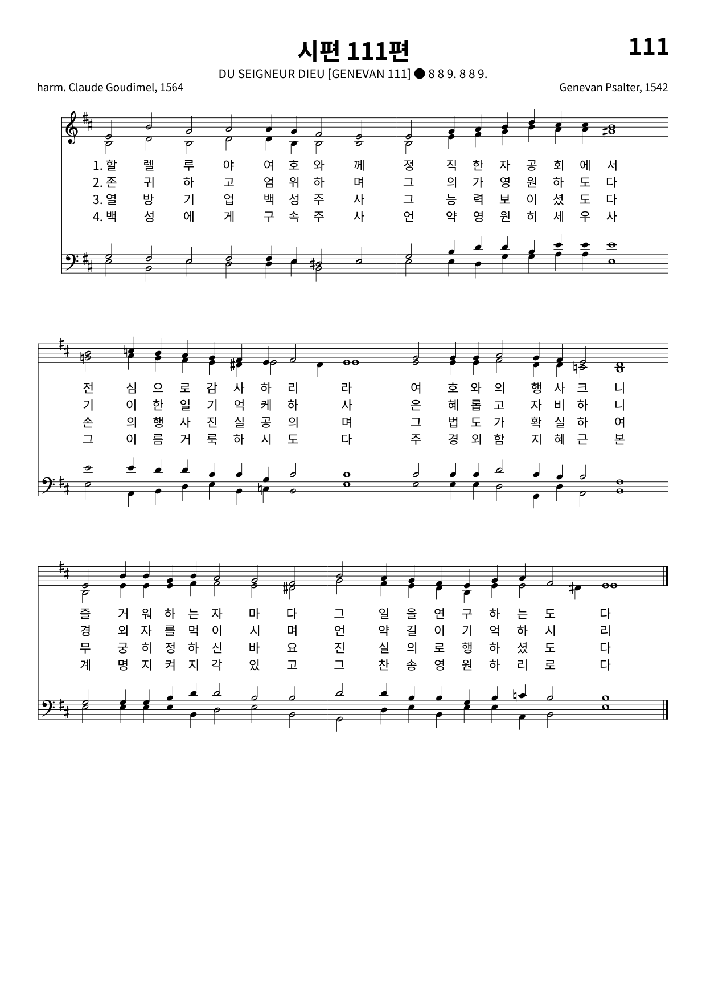

Psalm 111
DU SEIGNEUR DIEU [GENEVAN 111] · 8 8 9. 8 8 9.
English title: Praised Be the LORD! I Shall Impart
Tune: Genevan Psalter, 1542 · Harmony: Claude Goudimel, 1564 · Lyrics: Korean adaptation of Psalm 111 from the Korean Revised Version (AI draft adaptation · not yet theologically reviewed) · 4 stanzas
Score PDF MusicXML (for printing) MusicXML (for accompaniment, with prelude and repeats) Read Psalm 111 (Korean Revised Version)
Score
← Psalm 110 ListAccompaniment (in preparation)Psalm 112 →
Lyrics (Korean)
Stanza 1
할렐루야 여호와께
정직한 자 공회에서
전심으로 감사하리라
여호와의 행사 크니
즐거워하는 자마다
그 일을 연구하는도다
할렐루야 여호와께
정직한 자 공회에서
전심으로 감사하리라
여호와의 행사 크니
즐거워하는 자마다
그 일을 연구하는도다
Stanza 2
존귀하고 엄위하며
그 의가 영원하도다
기이한 일 기억케 하사
은혜롭고 자비하니
경외자를 먹이시며
언약 길이 기억하시리
존귀하고 엄위하며
그 의가 영원하도다
기이한 일 기억케 하사
은혜롭고 자비하니
경외자를 먹이시며
언약 길이 기억하시리
Stanza 3
열방 기업 백성 주사
그 능력 보이셨도다
손의 행사 진실 공의며
그 법도가 확실하여
무궁히 정하신 바요
진실 의로 행하셨도다
열방 기업 백성 주사
그 능력 보이셨도다
손의 행사 진실 공의며
그 법도가 확실하여
무궁히 정하신 바요
진실 의로 행하셨도다
Stanza 4
백성에게 구속 주사
언약 영원히 세우사
그 이름 거룩하시도다
주 경외함 지혜 근본
계명 지켜 지각 있고
그 찬송 영원하리로다
백성에게 구속 주사
언약 영원히 세우사
그 이름 거룩하시도다
주 경외함 지혜 근본
계명 지켜 지각 있고
그 찬송 영원하리로다